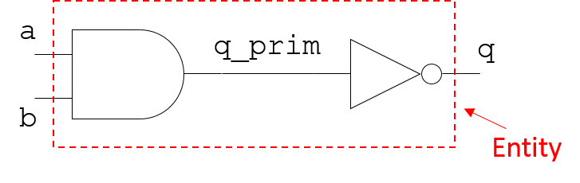
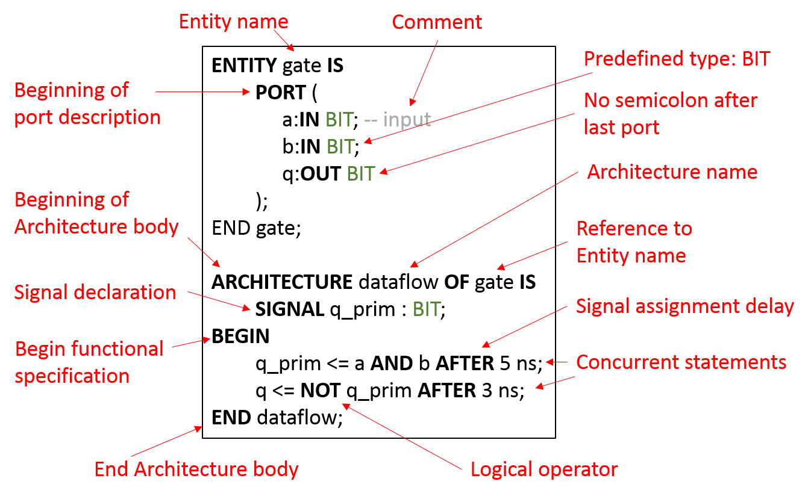
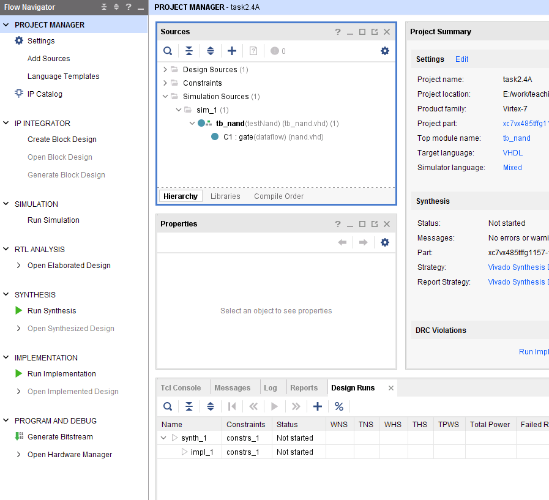
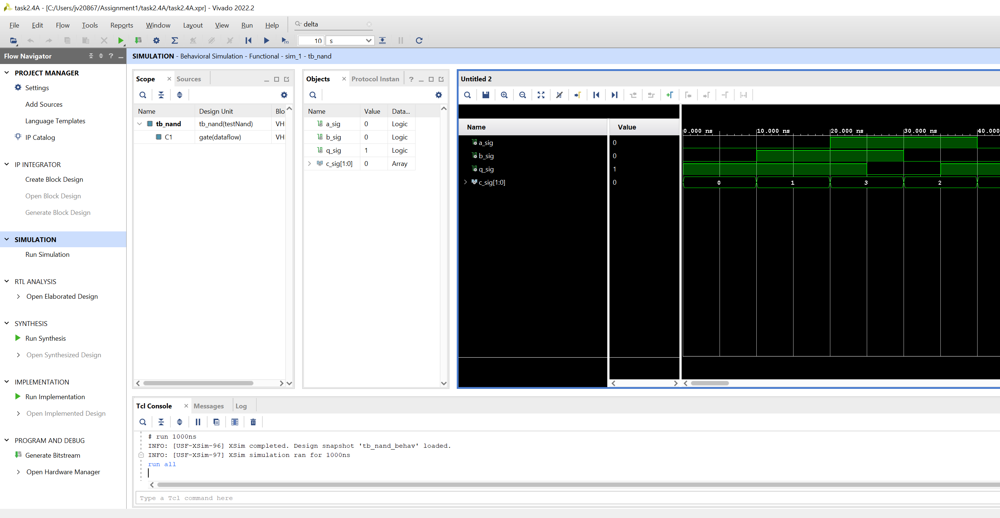

|
|
|
|
The learning objectives for this section are:
Software and hardware implementations refer to solutions for some desired functionality that are either implemented by programming a processor, such as the one in the computer you are using for this lab, or using custom hardware. This is best understood from a simple example: sorting a sequence of numbers stored as a file on disk. Let's assume that the voltage on an input pin goes high, which is the signal to read data from a block with a specific location on the disk into your system, sort it, and write it back.
If the implementation is software-based, whatever programming language you choose, it will have a routine to read the sequence of numbers from the disk into main memory, a data abstraction that allows you to manipulate the data items and reorder them according to your chosen algorithm, and a routine to write the sorted data back to disk. The important point here is that the processor in your computer executes these steps, which have been translated to the binary instructions it can understand through a process of compilation1 of your plain text programme. The processor is not just capable of running this one programme; it can carry out any function so long as it can be described in a programming language. Precisely because of this versatility, the general purpose processor in a computer is not the most efficient at carrying out any one function or type of function; it sacrifices efficiency for generality.
A hardware solution on the other hand, has custom hardware for a given function. For the above example, custom logic will monitor the input pin voltage, read the data from disk, sort it, and write it back. This logic cannot do anything else, as it is explicitly designed for this one function. Consequently it can be optimised to a level of efficiency that is typically orders of magnitude higher than a general purpose processor. Such an application specific solution results in a chip called an ASIC, which stands for Application Specific Integrated Circuit.
These are the two extremes. There are certain processors, such as digital signal processors (DSP), which are very efficient in performing a certain class of functions, but have a narrower instruction set than a general purpose processor. Their efficiency is higher than a general purpose processor in performing their specialised algorithms, but less so than an ASIC. On the other hand they can perform more functions than an ASIC, but less functions than a general purpose processor.
Field-programmable gate arrays (FPGA) are a fourth class of implementation choice, which sits between DSPs and ASICs in terms of efficiency in implementing a given function. FPGAs are essentially a collection of logic gates and more complex blocks such as memories, adders and multipliers that are not configured. They can be configured to implement a given function by a programmable interconnect fabric. Boolean logic functions are implemented by look-up tables that can be programmed with the truth table of the given function. FPGAs generally provide very efficient solutions, though less so than an ASIC. On the other hand, they can be configured to implement multiple functions unlike an ASIC. Modern FPGA platforms have large amounts of predesigned blocks that can be resued, called IP (for intellectual property) blocks. These range from commonly used arithmetic blocks such as adders and multipliers to communication blocks such as universal asynchronous receiver transmitter (UART) modules to digital signal processing units to full processors that can be synthesised onto the FPGA fabric, and on-chip buses with bus masters and arbiters.
Two very important non-technical issues related to implementation choice for a given application are development time and cost. A routine in a high-level programming language is the most time-efficient and economical way of implementing something. Designing an ASIC is very expensive in terms of both development time and cost, as a custom chip has to be designed and fabricated. FPGAs are a good compromise, as they can be bought off the shelf, and programmed to implement a given function, and are being used in increasing numbers of applications. However it is important to note the following:
The first point to understand about VHDL therefore is that it is NOT a software programming language. What you do in VHDL “programming” is to describe the hardware that implements a given function. This description can be done in different ways as described below. Whatever your type of description, the equivalent to the compiler in a software environment takes your description and transforms it into a netlist that is used to configure the resources in the FPGA. Most of these details of how the circuit is configured are unimportant at this stage, and the important points will be discussed later, but the central message is:
A working hardware model in VHDL comprises at least two parts, an entity description describing the interface that the hardware component presents to the rest of the world, and an architecture body that describes the functionality of the component. To use a software analogy, this is similar to declaring a function prototype and the function body. The architecture body can be bound to the entity description at the time of instantiating the component, i.e., using a working model of the component, for example in a simulation. A single entity can have many architecture bodies, each representing a different implementation. These are generally functionally equivalent, but can be implemented in different styles for example, or using different components. Having multiple implementations that can be bound to the same interface can be quite useful in different scenarios such as debugging different versions, using different library components, or targeting different performance and/or cost specifications and so on.
In modelling hardware, VHDL supports the general "divide and conquer" approach used in Engineering to tackle complex tasks. This essentially means a complex task is divided into several smaller tasks that are each easier to solve, and combining the solutions to each of these subtasks results in the solution to the overall problem. In the field of Microelectronics we use two terms called partitioning and hierarchy to refer to a subdivision that is essentially flat (i.e., components working in parallel), or hierarchical, (i.e., components being composed of subcomponents which in turn are composed of their own subcomponents, until the basic building blocks of the technology are reached). In practice a real design has both partitioning as well as hierarchical subdivision.
There are several different coding styles in VHDL that support modular design. We will defer a more complete discussion of modularity until later, as we don’t want to get sidetracked at this stage, but think of it for now as having one component implementing some limited functionality only, but doing it well. The complete design consists of many such modules. To again use the software analogy, modularity is a key technique in writing readable and reusable programmes.
These coding styles can be broadly described as:
In general, VHDL code that is meant to be synthesised (translated to hardware using an automated process) is usually termed RTL in the vernacular of the digital design community, even though in practice it is a mix of all three styles.
We will look at several examples illustrating these styles in the following sections that demonstrate good practice.
In these assignments you will use the Vivado software suite, This first example comprises a NAND gate built from cascading an AND gate with an inverter, as shown in Fig. 1.

The interface to the outside world is defined by two input pins a and b, and one output pin q. The q_prim signal is essentially an internal wire connecting the output of the AND gate to the input of the inverter. There are many possible ways of implementing this functionality, and one possible VHDL model of this circuit is given below.
ENTITY gate IS
PORT (
a:IN BIT; -- input
b:IN BIT;
q:OUT BIT
);
END gate;
ARCHITECTURE dataflow OF gate IS
SIGNAL q_prim : BIT;
BEGIN
q_prim <= a AND b AFTER 5 ns;
q <= NOT q_prim AFTER 3 ns;
END dataflow;

The description starts with the reserved word entity, and the first thing to note is that VHDL is NOT case sensitive; i.e., entity, ENTITY and EntiTy as well as any other combination of upper- and lower-case combinations are all acceptable and will not generate a syntax error. However, you should adopt some sensible convention that aids readability, such as always using upper-case letters for reserved words. In this example, all reserved words are shown in upper-case.
The interface specifies two inputs of type in and one of type out, which restricts the direction of signal flow. A type inout is also possible that allows bidirectional signal flow, but is not recommended at this point as it has implications in hardware.
The key word architecture begins the architecture body, and is always followed by an entity reference, in this case gate. What this means is that the inputs and outputs defined in the entity description can be read and written to within the architecture body.
This is followed by a declaration space, where a signal called q_prim is declared. A SIGNAL is a value holder in VHDL, and in this example can be thought of as representing a wire in hardware.
The type bit is a predefined (native) type in VHDL that can take the value of '0' or '1'. We will actually not use this type when designing logic, as in reality, wires can have values other than '0' or '1', even if they are exclusively digitally driven, such as high impedance 'Z', unknown 'X', weak / forcing high etc when a wire is driven by multiple drivers. The type we will use is called std_logic, which is defined in a library implemented to an IEEE standard called IEEE.STD_LOGIC.1164. However we use it now for illustration as it is the simplest type and is perfectly adequate for this example.
After the keyword begin, the functional description is contained in two concurrent signal assignment statements. This is starkly different from standard "programming"; the statements do not execute in sequence as one would expect in a typical programming language. Instead they execute simultaneously, as that is exactly how events would unfold in hardware.
How does this work?
To begin with, let’s ignore the AFTER clause, and assume that the two concurrent statements in the example are:
q_prim <= a AND b;
q <= NOT q_prim;
Any change in input signals to any of the individual concurrent statements trigger an evaluation in that statement. Changes in a and / or b will cause the first statement to be evaluated. If that results in a change in the value of q_prim, that acts as an evaluation trigger for the second statement as q_prim is an input to the second statement.
A critical thing to appreciate is that all signal assignments incur some delay; all hardware components take some non-zero time to update. Even when there is no explicit delay associated with the assignment as above (we have removed the AFTER clause) the signals have an intrinsic delay that is infinitessimally small, but quantised, called the delta delay. This can cause some confusion when running a simulation and stepping through the code. This topic is covered in Section 3.1.2 later.
For now, we need to remember that all signal asignments have an associated delay.Now, let’s take a look at how the functionality is implemented. The NAND functionality is accomplished with the help of an internal signal called q_prim, in two lines; each line is a signal assignment. The first line specifies that the signal q_prim should be updated with the value of (a AND b) after a delay of 5 ns. This signal delay is intended to model the propagation delay of a real logic gate; no physical gate can operate with zero delay. It is very important to understand that this delay of 5 ns is for the purpose of simulating the gate with a realistic delay, which will help in tracing hazards. It cannot be synthesised; i.e., from this description an AND gate with a physical delay of 5 ns cannot be realised. However we can model an AND gate with a physical delay of 5 ns for simulation purposes.
The second line assigns the inverted value of q_prim to q, which is an external pin, after a delay of 3 ns. When describing functionality in VHDL, it is important to think in terms of how this functionality will be implemented in hardware. In this example, the hardware implication is very clear: the first signal assignment models an AND gate with a physical delay of 5 ns. The second assignment models an inverter with a delay of 3 ns.
Finally, would you say this was a structural, data-flow or behavioural style description? Well, it’s clearly not a structural description, as it does not make any use of subcomponents. Inside the architecture body, there are simply two concurrent assignment statements, and hence this can be thought of as a data-flow style description, as the name of the architecture body implies. You can also think of it as a gate-level description, as each signal assignment clearly corresponds to a gate.
In order to simulate this model of a NAND gate, we use a testbench, to instantiate this component and provide stimuli to its inputs and connects a signal to its output, so that its transient behaviour can be observed. The testbench we will use to test this model is given below.
ENTITY test IS END test;
ARCHITECTURE testNand OF test IS
COMPONENT gate
PORT (
a:IN BIT;
b:IN BIT;
q:OUT BIT
);
END COMPONENT;
SIGNAL a_sig, b_sig, q_sig:BIT;
SIGNAL c_sig:BIT_VECTOR(1 downto 0);
BEGIN
C1:gate PORT MAP(a_sig, b_sig, q_sig);
a_sig <= c_sig(1);
b_sig <= c_sig(0);
c_sig <="00",
"01" AFTER 10 ns,
"11" AFTER 20 ns,
"10" AFTER 30 ns,
"00" AFTER 40 ns;
END testNand;
Note the following regarding this software testbench:

On the left-hand side is the Flow Navigator with a series of tasks that provide control over the design and implementation process. These are Project Configuration, IP Integration, Simulation, RTL Analysis, Synthesis, Implementation, and Bitstream Generation. The commands and options available in the Flow Navigator depend on the status of the design. Unavailable steps are grayed out until required design tasks are completed. In Assignement 1, you will only need to explore the Project Manager and Simulation. For more details on the Vivado integrated design environment (IDE) and Vivado simulator refer to references [5-6].
Briefly, synthesis is the process of mapping the hardware described in the RTL to logic. After synthesis, RTL analysis can be used to elaborate the design. Implementation is the process of place and route; the synthesised netlist is mapped to the available resources on the targeted FPGA platform. Bitstream generation produces a bitstream that can be used to programme the FPGA.
In the sources window to the right of the flow navigator, choose the hierarchy tab as shown. Both of the source files you added should show up under the sim folder, as well as under design sources. Double-click on the sources and have a look at the code. Make sure they are identical to the sources of the "nand" and "tb_nand" modules listed above.

You may need to zoom in on the simulation window to see the waveform details: right-click anywhere in the window and select Full View. If q_prim is not visible, In the Objects window, right-click on q_prim signal and select Add to Wave Window. There will be no waveform associated with this signal as it was added after the simulation ran. In the simuation menu click on Restart, which is a blue icon that looks similar to a rewind button. Afterwards rerun the simulation and the waveform for q_prim will be generated.
For example. b_sig changes at 10 ns, but the output q_prim does not need to change, as the boolean function (a_sig AND_b_sig) is still '0'. After a_sig changes at 20 ns, q_prim should go to '1', but only after a delay of 5 ns, when it duly changes to '1'. This event on q_prim results in a change in q, 3 ns later.
The following points were covered in this section.
|
|
|
|